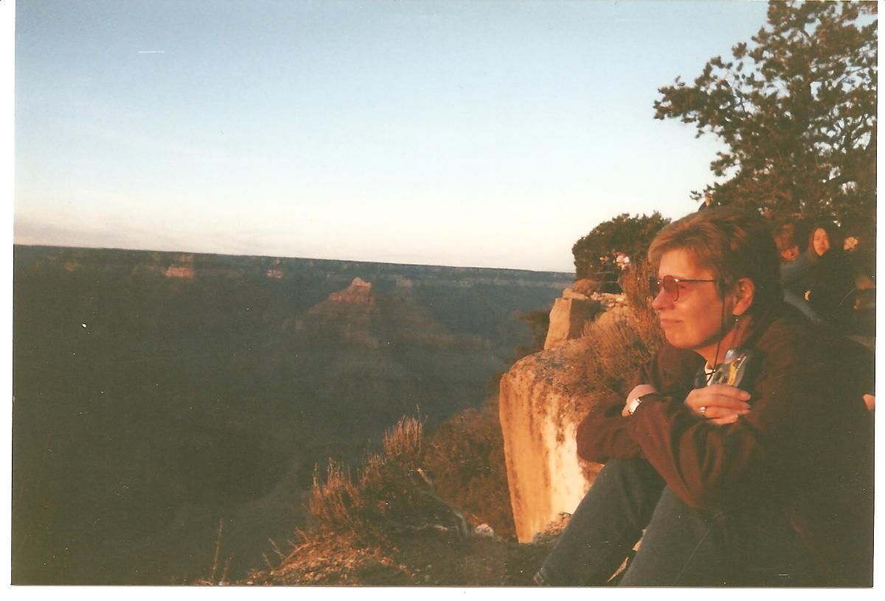

Mom

Transitioning to the MacBook, I've set up my display(s) to rotate the background among several pictures. This one just popped up - a rare candid of my mother (10/7/39-2/3/07), at the Grand Canyon a few years ago when I visited my folks at their Arizona winter place. She hated having her picture taken; I've never been much on photography - but here I captured something...
